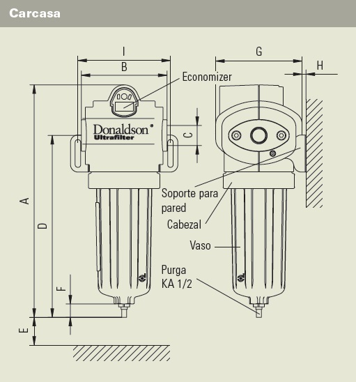

Filtro Ultra-Filter: incomparable y versátil
Soluciones de filtración versátiles para aplicaciones de aire comprimido
El aire comprimido es, junto con la corriente eléctrica, el agua y el gas, uno de los recursos energéticos más usados. Por ello, para un tratamiento de alta calidad deben hacerse varias consideraciones:...
Eficacia incomparable
El desarrollo de los filtros Ultra-Filter se ha basado en la experiencia acumulada en todo el mundo y en la aplicación de innovadores avances para una técnica de filtración altamente eficaz y rentable.
| Contaminación (partículas sólidas) | Agua | Aceite | |||
|---|---|---|---|---|---|
| Clase de calidad de aire | Cantidad máxima de partículas por m3, tamaño de partícula, d en μm | Punto de roció bajo presión | Concentración | ||
| 0.10 < d ≤ 0.5 | 0.5 < d ≤ 1.0 | 1.0 < d ≤ 5.0 | °C | mg/m 3 | |
| 0 | Especificado según la aplicación y mejor que clase 1 | ||||
| 1 | 20,000 | 400 | 10 | ≤ -70 | ≤ 0.01 |
| 2 | 400,000 | 6,000 | 100 | ≤ -40 | ≤ 0.1 |
| 3 | n.e. | 90,000 | 1,000 | ≤ -20 | ≤ 1 |
| 4 | n.e. | n.e. | 10,000 | ≤ +3 | ≤ 5 |
| 5 | n.e. | n.e. | 100,000 | ≤ +7 | > 5 |
Nueva tecnología UltraPleat ®
La innovadora tecnología de filtración Ultrapleat ®
Con la nueva tecnología de filtración UltraPleat se ha conseguido reducir la presión diferencial un 50% comparado con la anterior gama, y con una eficacia de filtración igual o superior.
Eficacia inmejorable
La baja presión diferencial de la tecnología UltraPleat influye en el consumo energético y convierte los elementos filtrantes en filtros de bajo consumo. Para los usuarios de aire comprimido aumenta el ahorro energético, por lo tanto, su contribución a la conservación de los recursos.
Reducción de costes gracias a la eficiencia energética
El economizer para el cambio económico del elemento filtrante
Si realiza a tiempo el cambio del elemento filtrante, puede minimizar el coste operativo. El Economizer calcula el punto óptimo para proceder al cambio del elemento filtrante.
Distinguido con el calificativo "sin igual"
Con nueve tamaños, el filtro Ultra-Filter cubre un rango de 35 a 1100 m3/h de caudal y, con ello, las potencias habituales de compresor de entre 2 y 110 kW. Hay tres variantes disponibles:...
De fácil uso
Facilidad de manejo incomparable
El filtro Ultra-Filter se maneja con una facilidad sorprendente. Esto puede comprobarse tanto en la instalación como en el cambio del elemento filtrante. La carcasa inferior del filtro gira fácilmente mediante una rosca de bayoneta y se desprende junto con el elemento filtrante de la cabeza del filtro.
Así de fácil resulta también la colocación del nuevo elemento. Para ello, no es necesario desconectar el purgador de condensados. El indicador de presión diferencial es reversible, con lo que ésta puede verse siempre en la posición correcta.
Se pueden instalar en serie con los adaptadores
Flexibilidad y Seguridad incomparable
Todos los filtros pueden utilizarse a elección como filtros de coalescencia (paso por el elemento filtrante de dentro a fuera) o como filtros de partículas (de fuera a dentro). La clave es:...
El filtro „All-in-One”– Filtro de tres etapas DF-T
Eficacia inmejorable
Basado en el exitoso filtro DF, se desarrolló el innovaro DF-T(res) Diseñado para la purificación de aire comprimido y otros gases en zonas dónde el espacio sea limitado. Combinando varias etapas de filtración en una sola carcasa, el DF-T es la última innovación, máxima eficacia en el mínimo espacio, ideal como filtro final.
Innovative solution in smallest places with the three-stage filter DF-T
Filtro DF-T
La utilización del nuevo DF-T, es especialmente interesante en punto de uso, en aplicaciones sensibles para la industria alimentaria, farmacéutica, láser, tecnología medioambiental, cabinas de pintura, generadores de N2, etc. También es indicado para el tratamiento centralizado en instalaciones de hasta 110 m3/h, la forma más eficiente de conseguir la calidad requerida en pequeños compresores.
El DF-T – compacto y ahorrador
Ahorro de espacio
El Economizer, integrado en la carcasa del filtro, supervisa la vida útil del elemento, indica el estado del mismo y avisa cuando es necesario su remplazo o cuando hay alguna incidencia, por ejemplo golpe de aceite en la instalación. Su señal puede ser enviada remotamente, es una solución ideal para proteger sus aplicaciones.
Con 3 tamaños, el filtro de tres etapas, cubre caudales de hasta 110 m³/h, a una presión operativa de 7 bar.
Elementos filtrantes DF-T
| Tamaño | Caudal* | Peso** | Tipo de Carcasa | Dimensiones Carcasa | Dimensiones Elemento | ||||||||||
|---|---|---|---|---|---|---|---|---|---|---|---|---|---|---|---|
| DF-T | m3/h | kg | DF | A | B | C | D | E | F | G | H | I | A | B | C |
| mm | mm | mm | mm | mm | mm | min./max. mm |
mm | mm | mm | mm | |||||
| 0050 | 50 | 1,0 | 0120 | 341 | 103 | G 1/2" | 266 | 150 | 27 | 107 | 5/34 | 107 | 55 | 135,5 | 149 |
| 0080 | 80 | 2,0 | 0210 | 382 | 139 | G 3/4" | 300 | 180 | 27 | 140 | 5/53 | 150 | 75 | 157,5 | 174 |
| 0110 | 110 | 2,2 | 0320 | 442 | 139 | G 1" | 360 | 250 | 27 | 140 | 5/53 | 150 | 75 | 217,5 | 234 |